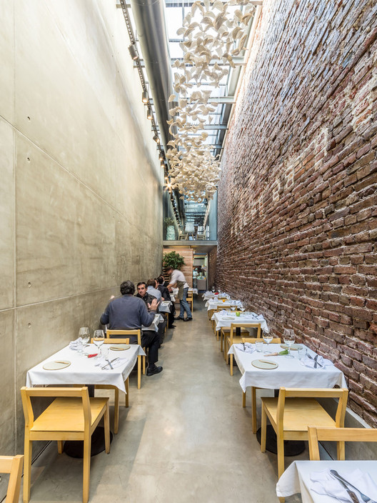

Historia
El Aniquilador del Hambre: 50 Años de Tradición
Fundado en 1975 por Pedro Valenzuela y su esposa Laura en el barrio Bellavista, "El Aniquilador del Hambre" nació como un pequeño local con apenas cinco mesas. Don Pedro, ex camionero que recorrió Chile, decidió compartir los sabores descubiertos en sus viajes.

El restaurante ganó rápida fama por sus generosas porciones y recetas tradicionales chilenas. Sus especialidades incluyen un legendario Barros Luco con carne seleccionada, el chacarero con porotos verdes crujientes, completos italianos con abundante palta, y empanadas de horno con masa quebradiza.
En el área de postres destacan sus alfajores caseros, mil hojas artesanales y la leche asada preparada según la receta familiar. Durante las celebraciones patrias, su pastel de choclo en greda auténtica y la reconfortante cazuela atraen a multitudes de comensales.
"El Aniquilador" también es conocido por sus bebidas tradicionales como el clásico vino Gato y el potente Terremoto con helado de piña.
.jpeg)
Actualmente dirigido por la tercera generación de Valenzuelas, el restaurante ha sobrevivido cincuenta años manteniendo viva la esencia de la cocina chilena tradicional, convirtiéndose en una institución culinaria nacional con dos sucursales en Santiago.